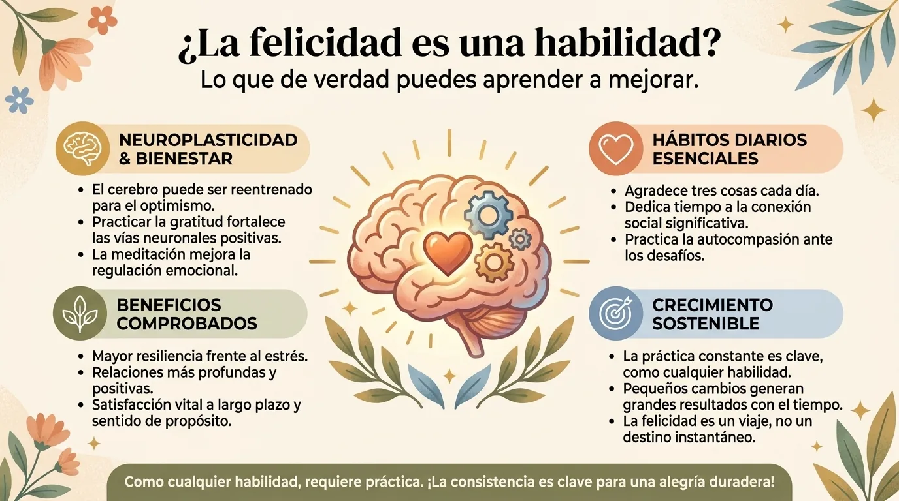
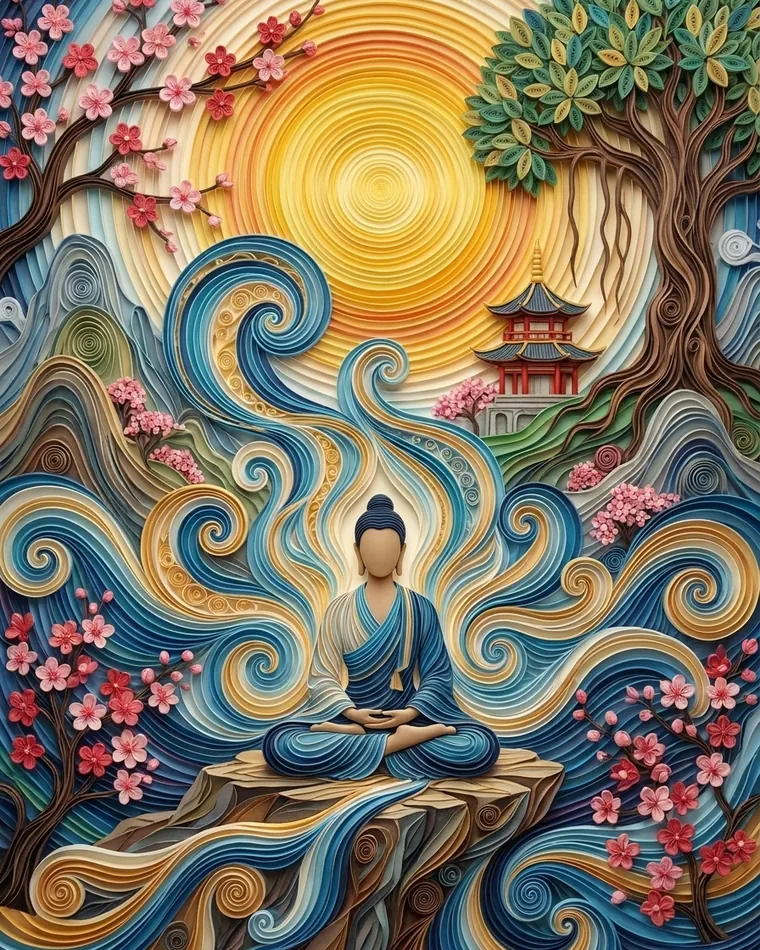

Cómo ser feliz: ¿la felicidad es una habilidad que puedes mejorar?
Cómo ser feliz según la psicología positiva: la felicidad se entrena, con efectos modestos pero reales. Las cuatro habilidades que de verdad importan.
¿De qué depende la felicidad?
Depende a la vez de características individuales relativamente estables, de tus condiciones de vida, de tus relaciones, de tu salud y de ciertos comportamientos o estrategias psicológicas que sí se pueden modificar. Y, sin embargo, al preguntarnos cómo ser feliz, hablamos de ella como de algo que se tiene o se pierde:
«Soy feliz».
«Ya no soy feliz».
Como si se tratara de un objeto misterioso escondido en algún lugar entre la pareja adecuada, el trabajo adecuado, la casa adecuada y una cuenta bancaria lo bastante tranquilizadora.
En el extremo contrario, una parte de la industria del desarrollo personal propone exactamente el exceso opuesto:
«La felicidad es una elección».
Esa frase puede resultar seductora cuando todo va más o menos bien.
Pierde bastante brillo frente a:
- la enfermedad;
- el duelo;
- la precariedad;
- la violencia;
- la depresión;
- la soledad profunda.
La realidad científica probablemente esté en un punto intermedio.
En 2005, Sonja Lyubomirsky, Kennon Sheldon y David Schkade propusieron un modelo que se volvió muy influyente y que distinguía, entre otras cosas, factores genéticos, circunstancias y actividades intencionales; su idea central era que ciertas prácticas voluntarias podrían sostener cambios duraderos en el bienestar a pesar de la adaptación hedónica, esa tendencia a acostumbrarnos poco a poco a muchas mejoras o empeoramientos de la vida. (Sage Journals)
La prensa ha resumido a menudo el modelo con porcentajes demasiado rígidos, a veces como si exactamente el 50 % de la felicidad fuera genético, el 10 % dependiera de las circunstancias y el 40 % estuviera totalmente bajo tu control.
Esa interpretación es demasiado simplista.
La felicidad no es una tarta cortada de antemano.
Pero la intuición de fondo sigue siendo válida:
algunas dimensiones del bienestar se pueden entrenar.
No todas.
No sin límites.
Pero lo suficiente como para que la pregunta merezca algo mejor que un simple «o naces feliz o no lo eres».
¿Cómo ser feliz? ¿Cuál es la primera habilidad?
Dejar de exigirle a la felicidad que sea una emoción permanente. Imagina que tu definición de felicidad es:
sentirte bien todo el tiempo.
Si ese es el criterio, ya has perdido.
Un organismo humano normal pasa por:
- alegría;
- cansancio;
- irritación;
- miedo;
- tristeza;
- aburrimiento;
- deseo;
- alivio.
Intentar eliminar todas las emociones desagradables a veces produce justo el efecto contrario: empezamos a ver cada momento de tristeza como la prueba de que algo va mal en nuestra vida.
El bienestar psicológico se parece más a una capacidad de vivir toda la gama de emociones sin perder el rumbo, las relaciones ni el sentido.
Puedes estar profundamente contento con tu vida y triste hoy.
Puedes querer a tu familia y estar furioso con ella el martes por la noche.
Puedes haber elegido un trabajo que va contigo y aun así querer tirar el teclado por la ventana a las 16:42.
La habilidad, entonces, no consiste tanto en producir alegría constantemente como en reducir la confusión entre:
«siento una emoción desagradable»
y
«mi vida va mal».
Este matiz conecta con la meditación y los enfoques de atención plena: observar una emoción como un estado pasajero permite a veces evitar que se convierta de inmediato en una identidad o en una conclusión general.
«Siento ansiedad»
no es lo mismo que
«soy una persona ansiosa incapaz de ser feliz».
Cambian unas pocas palabras.
Pero, psicológicamente, con ellas cambian muchas cosas.
¿Funcionan de verdad los ejercicios de psicología positiva?
Sí, modestamente, y eso ya es mucho. La psicología positiva ha desarrollado toda una familia de intervenciones:
- gratitud;
- identificación de fortalezas;
- actos de amabilidad;
- visualización de un futuro mejor;
- prácticas de atención plena;
- trabajo sobre el sentido;
- relaciones positivas.
Un metaanálisis clásico de 2013 sobre ensayos controlados aleatorizados encontró efectos modestos sobre el bienestar subjetivo y psicológico, así como una disminución de los síntomas depresivos, aunque señalaba una fuerte heterogeneidad, diferencias de calidad metodológica e indicios de sesgo de publicación. (PubMed)
Una revisión sistemática reciente publicada en 2026, que abarca la literatura de 2000 a 2025, concluye también que las intervenciones de psicología positiva producen de media efectos favorables modestos sobre el bienestar subjetivo, la satisfacción vital y los afectos positivos, con resultados especialmente prometedores para los enfoques que combinan gratitud, fortalezas personales y mindfulness; aun así, los autores subrayan que persisten limitaciones metodológicas. (PubMed)
Es casi la mejor noticia posible.
¿Por qué?
Porque un efecto modesto significa que no necesitas creer que tres líneas de gratitud van a revolucionar tu existencia.
Pueden simplemente mover un poco la media.
Y una ligera mejora repetida durante varios años puede ser muy importante.
Tendemos a despreciar los efectos pequeños porque queremos una transformación espectacular.
Pero una vida está hecha, sobre todo, de días normales y corrientes.
Mejorar un día corriente unos pocos puntos porcentuales podría acabar siendo más útil que hacer dos retiros extraordinarios al año.

¿Qué importa más que «pensar en positivo»?

Probablemente, cuatro habilidades que se pueden entrenar: la atención, la relación con los demás, la acción alineada con tus valores y la recuperación.
La primera es la atención.
Lo que nunca notas apenas se convierte en experiencia consciente.
Puedes tener un día objetivamente agradable y pasarte toda la tarde dándole vueltas al único momento frustrante.
La meditación, la gratitud o ciertas prácticas contemplativas enseñan precisamente a desplazar de forma voluntaria una parte de la atención.
La segunda es la relación con los demás.
La investigación sobre el bienestar encuentra una y otra vez la enorme importancia de los vínculos sociales, del apoyo y de la calidad de las relaciones.
Puedes optimizar tu rutina matutina a un nivel casi olímpico; si estás profundamente aislado, el problema probablemente no sea que le falte limón a tu agua.
La tercera es la acción alineada con tus valores.
Algunas actividades son agradables mientras las haces.
Otras aportan, sobre todo, sentido a posteriori.
Aprender un idioma, ayudar a alguien, criar a un hijo, levantar una empresa o correr un maratón no es necesariamente agradable en cada minuto.
Pero una vida satisfactoria no se reduce a maximizar el placer inmediato.
La cuarta es la recuperación.
Sueño.
Descanso.
Actividad física.
Momentos sin estímulos.
Un cerebro agotado tiene una visión del mundo sorprendentemente distinta de la de ese mismo cerebro descansado.
Quizá la felicidad sea, entonces, menos un estado que perseguir directamente que un ecosistema que cuidar.
¿Por qué querer ser feliz a toda costa puede hacerte menos feliz?
Porque, a fuerza de vigilar el estado deseado, conviertes cada variación normal en un problema. Supón que cada noche puntúas tu felicidad:
lunes: 7,8.
martes: 7,2.
miércoles: 6,9.
El jueves empiezas a entrar en pánico:
«¡Mi felicidad está bajando!»
Es la misma paradoja que con el sueño.
Cuanto más se convierte la felicidad en una obligación, más se parece cada momento corriente a un fracaso.
Y, sin embargo, la vida tiene muchísimos momentos emocionalmente neutros.
Fregar los platos.
Esperar.
Caminar hasta el metro.
Responder un correo.
No necesitas alcanzar un éxtasis contemplativo en cada paso de cebra.
Una buena vida puede contener mucha neutralidad.
Incluso puede contener épocas realmente difíciles.
Por eso, la búsqueda del bienestar gana mucho si pasa de:
«¿Soy feliz ahora mismo?»
a:
«¿Mi forma de vivir crea, razonablemente, las condiciones para una vida que me sienta bien?»
Preguntas más útiles:
¿Duermo lo suficiente?
¿Veo a las personas importantes para mí?
¿Mis días contienen algo que me importe?
¿Tengo tiempo libre de obligaciones?
¿Mi trabajo acaba sistemáticamente con mi energía?
¿Puedo sentir una emoción difícil sin intentar anestesiarla de inmediato?
¿Ves la diferencia?
La felicidad deja de ser una sonrisa.
Se convierte en una arquitectura.
¿Cómo entrenar la felicidad durante 30 días?
Durante treinta días, no midas tu «nivel de felicidad».
Simplemente entrena cuatro comportamientos.
Cada día:
Atención — una cosa realmente agradable que notes de forma consciente.
No hace falta que sea extraordinaria.
El sol.
Una comida.
Una conversación.
Una ducha caliente.
Después:
Relación — un acto de conexión.
Un mensaje sincero.
Una llamada.
Escuchar sin mirar el teléfono.
Luego:
Sentido — una acción, aunque sea pequeña, ligada a algo que te importe.
Aprender.
Crear.
Ayudar.
Construir.
Y por último:
Recuperación — un rato de verdad sin producir nada.
Caminar.
Descansar.
Meditar.
Leer.
Pasados los treinta días, hazte solo tres preguntas:
¿Qué mejoraba de verdad mis días?
¿Qué hacía solo porque un artículo decía que debía funcionar?
¿Qué hábito merece quedarse?
Esa es la parte de habilidad.
No estar alegre a la orden.
Sino aprender poco a poco:
- dónde poner tu atención;
- qué relaciones cuidar;
- qué actividades tienen sentido;
- cómo proteger tu energía;
- cómo atravesar las emociones que no te gustan.
La felicidad probablemente no sea ni del todo elegida ni del todo impuesta.
Se parece más a la navegación.
Tú no eliges:
- el clima;
- el viento;
- el mar;
- el barco que te tocó al zarpar.
Pero algunas personas aprenden poco a poco a manejar mejor el timón.
Y a veces eso ya marca una diferencia enorme.
Preguntas frecuentes
¿De verdad se puede aprender a ser más feliz?
Algunas intervenciones psicológicas pueden aumentar modestamente el bienestar medio, pero el efecto varía según la persona, las condiciones de vida y las prácticas utilizadas. (PubMed)
¿La felicidad es genética en un 50 %?
Los factores genéticos influyen en las diferencias de bienestar, pero los porcentajes popularizados a partir de modelos antiguos no deben interpretarse como cuotas fijas e inmutables para cada persona.
¿Qué hábitos parecen más útiles?
Los datos respaldan sobre todo ciertas prácticas de gratitud, atención plena, uso de las fortalezas personales y cultivo de las relaciones, con efectos generalmente modestos más que milagrosos. (PubMed)
¿Hay que intentar ser positivo todo el tiempo?
No. El bienestar psicológico también implica la capacidad de reconocer y atravesar la tristeza, el miedo, la rabia y la frustración sin considerar automáticamente su presencia como un fracaso.
Practica con la app
- Mundos inmersivos
- Visualización
- Lugares sagrados del mundo: meditación guiada
- Ejercicios de meditación, visualización e imaginación guiada
- Meditación de viaje en el tiempo: un viaje imaginario guiado
¿Prefieres practicar antes que leer?
Todo lo que describe este artículo se practica en MeditaDream, una app de meditación gratis: 144 meditaciones guiadas y 17 mundos inmersivos en español, sin suscripción, sin anuncios, sin cuenta y sin conexión.